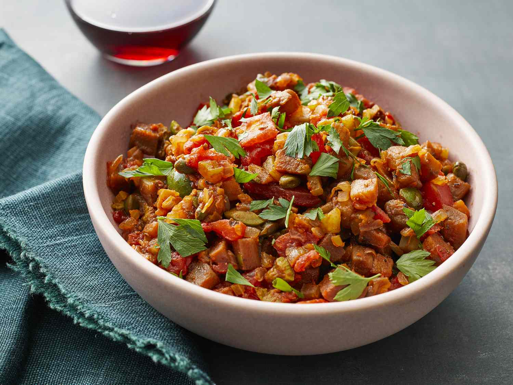

Caponata

Description:
Caponata is a Sicilian eggplant relish or appetizer that can be served hot or cold.
Delicious on toasted crusty bread!
Ingredients:
- 1 eggplant, peeled and cut into ½-inch cubes
- salt to taste
- 1/4 cup olive oil, divided
- 1 cup finely chopped celery
- 1 medium onion, finely chopped
- 1 clove garlic, minced
- 1 1/2 cups canned plum tomatoes, drained and coarsely chopped
- 12 green olives, pitted and coarsely chopped
- 1 1/2 tablespoons drained capers
- 1 tablespoon tomato paste
- 1 teaspoon freshly minced oregano
- 2 tablespoons red wine vinegar
- 2 teaspoons white sugar
- 1 teaspoon salt
- ground black pepper to taste
- 2 teaspoons minced fresh parsley, or to taste